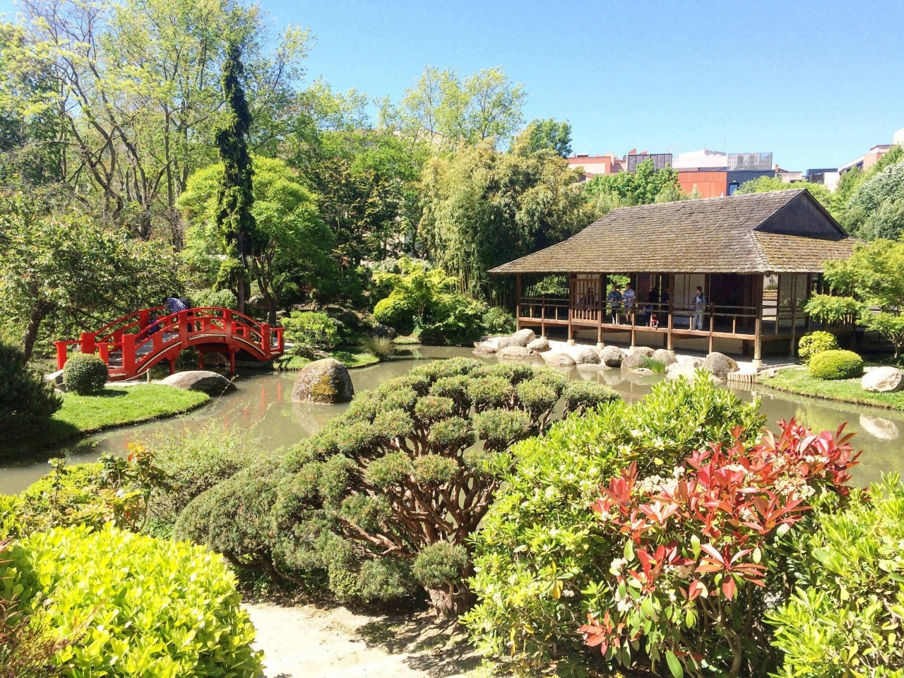
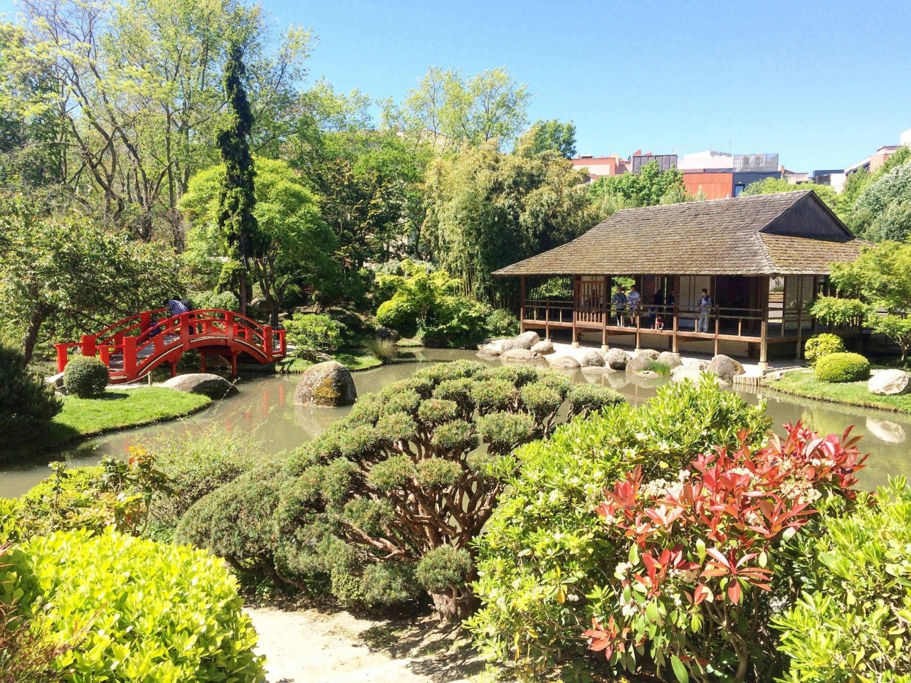

Authors of selected papers from ISORC 2025 will be invited to submit an extended version of their work for the Special Issue on AI-Driven Real-Time Distributed Computing for the Edge-Cloud Continuum review and possible publication in the Elsevier Journal of Systems Architecture: Embedded Software Design (JSA).
|
MAIN TRACK IMPORTANT DATES
|
|
| Submission deadline | January 08, 2025 |
| Acceptance notification | March 05, 2025 |
| Camera-ready papers | March 20, 2025 |
| Early registration | March 16, 2025 |
IEEE ISORC 2025 will feature several panel discussions. Panels provide an interactive forum that allows
renowned experts to engage with the audience to discuss leading-edge topics of interest to the ISORC
community. These topics relate in particular to the object/component/service-oriented real-time distributed
computing (ORC) technology, including Software architectures, Image, video and Stream Processing,
Communication for Emerging and Future Networks, and Real-Time System Management, the use of Artificial
Intelligence Techniques, Blockchain and Distributed Ledger Technology (DLT), Internet of Things, Cybersecurity
and Security, Optimization of Real-Time ORC, Sustainable and Green Computing, Formal Verification and Model
Checking, Safety, Ontology, Knowledge Modeling, Dependability, Fault tolerance, and Resilience, management,
monitoring, performance evaluation, operating systems, Middleware and System software, and many more.
Accordingly, ISORC 2025 solicits proposals for panels that are related to the conference's theme and that are
of general interest to the ISORC technical community.
Panels are expected to last 90 minutes and should feature diverse perspectives and challenging viewpoints.
Please refer to the Call for Paper for a list of some specific areas of interest.
A panel proposal should have the following structure:
- Proposed title
- Abstract (brief description of the topic)
- Why the panel will be of interest to the audience
- Short bio of the panel moderator, including any experience with prior panels
- Proposals for potential panelists with bios, offering a diverse range of perspectives (geography, academia/vendors/operators, etc.)
- Short description of the planned panel structure, including plans for how to engage the audience
We strongly encourage a panel format that keeps opening statements very short and that leaves sufficient room for lively discussions with the audience, as opposed to a succession of technical monologues. If needed, the Organizing Committee and Panel Co-Chairs can assist with the identification of additional panel members.
Proposals should be submitted via e-mail to the Panel Program Co-Chairs, with the subject line "ISORC 2025 Panel Submission". The lineup of panels will be selected after careful evaluation of all the proposals that are received.
- Panels Proposal Submission: February 08, 2025
- Notification of Acceptance: March 05, 2025
- Camera-ready Submission: March 20, 2025 (anywhere on earth)
- Conference date: May 26-28, 2025
-
Christiancarmine Esposito, University of Salerno, Italy.
We acknowledge support from the following.
 |
 |
 |